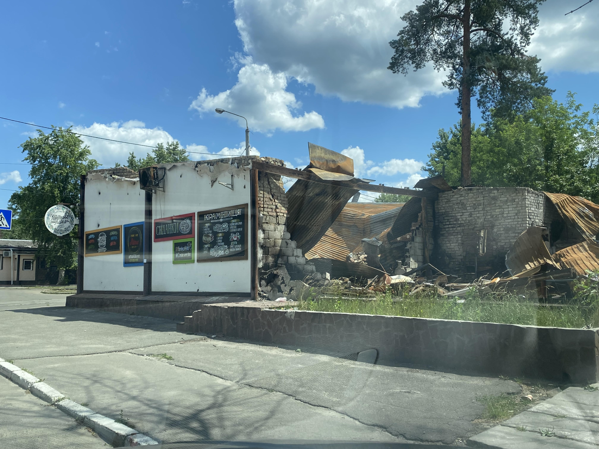
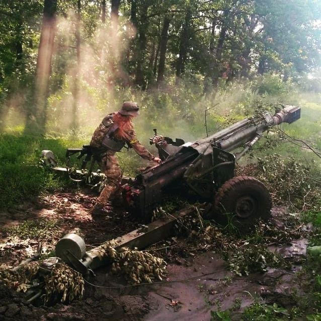

Близько 4 години 24 лютого росія за наказом президента путіна здійснила відкритий воєнний напад на Україну за підтримки білорусі. Уже за кілька хвилин почалися ракетні удари по всій території України, у тому числі неподалік від Києва. Російські війська вдерлися до України поблизу Харкова, Херсона, Чернігова, Сум, увійшовши з росії, білорусі й тимчасово окупованого Росією Криму.
Завдяки спротиву української армії та сил самооборони вже в перші дні агресії російська армія зазнала значних втрат у живій силі та техніці. Росія в жодній війні ще не зазнавала навіть приблизно таких великих втрат за такий короткий час. Країни світу запровадили потужні санкції проти росії та допомогають Україні надаючи зброю і надаючи прихисток переселенцям.
Війна триває з 2014 року. Ми боремось за незалежність нашої країни. Саме Україна захищає цивілізовану Європу від варварскої росії. Отимуючи допомогу ми переможемо швидше та збережемо більше життів.
І Слава Україні, Героям Слава!
Подяка вчителям Курсу Frond-end і Soft skills: Юлія Царьова і Євгенія Середенко.
 